Two members, one table, and nothing moving until both agree
A trade is an offer one member makes to another inside a community: some of your items, characters and coin, for some of theirs. You build it, they answer it. Until they answer, nothing has happened.
Both sides of a trade can carry items, characters, currency, or any mix, and either side can be empty — a gift is just a trade that asks for nothing back.
Characters are opt-in and off by default. A character only appears on a table if its owner has opened it to trades, and that stays true right up to the moment the offer settles. Step 2 covers it.
Pick what you give and what you want
Accept, decline, or counter
Everything moves together, or nothing does
Start from a member's row on the community's Members page. The composer has three panes: what you hold on the left, what they hold on the right, and the table you are building in the middle.
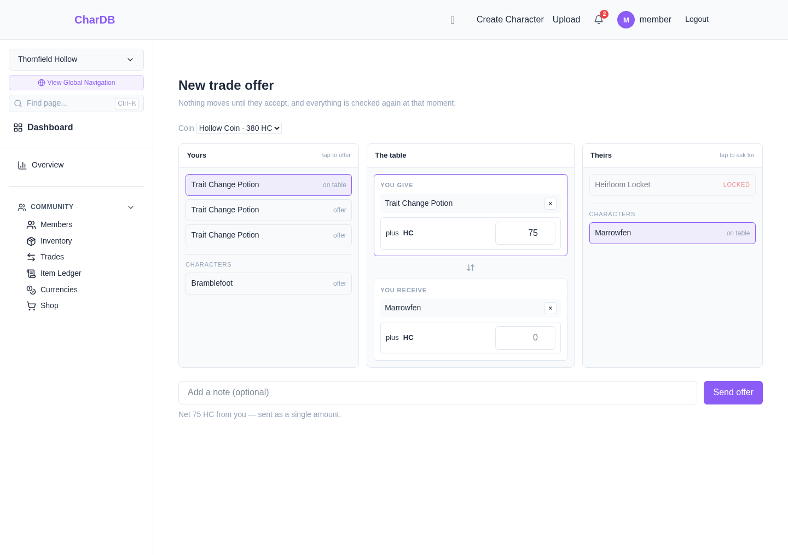
The two panes are not symmetrical, and that is the point. Your side lists every copy separately, because you are here and can choose which one leaves. Their side lists one line per item type with a count, because any copy will do — pinning one of theirs would make the offer fail the moment they traded that particular copy to someone else.
An item type its community has marked untradeable shows as locked rather than being hidden, so you can see it is there and see why it will not move. Your own untradeable holdings collapse to a single locked line with a count; there is no point listing thirty of them one by one when none can be picked.
Characters sit below the items in each pane, under their own heading. They are separated because they behave differently, which step 2 gets into — an item is a name and a count, and a character is somebody with a page.
Coin is a field on each side of the table rather than a line on it, because it is a price rather than a thing. Put an amount on both sides and only the difference is sent: 250 out and 100 back becomes 150 one way.
The currency picker offers only what you actually hold, and leaves out two kinds you might: archived ones, which keep their balances and stay readable but refuse new transactions at all, and untradeable ones, which are perfectly alive — granted, spent, refunded — but cannot move between members. Either would be refused at send over a rule you can do nothing about from here.
A character can go on the table like anything else, but only if its owner has said so. Open to Trades is off by default and it is the owner's switch, on the character's own edit page.
It sits in a list of six things an owner can say they are open to — sale for money, sale for community currency, trades for characters, trades for art, offers, and free to a good home. Open to Trades is the only one of the six with a mechanism behind it. The other five are notices: they say what you will consider, and anyone interested has to ask you in the comments. Ticking "open to trades for art" does not let anyone put your character on a table.
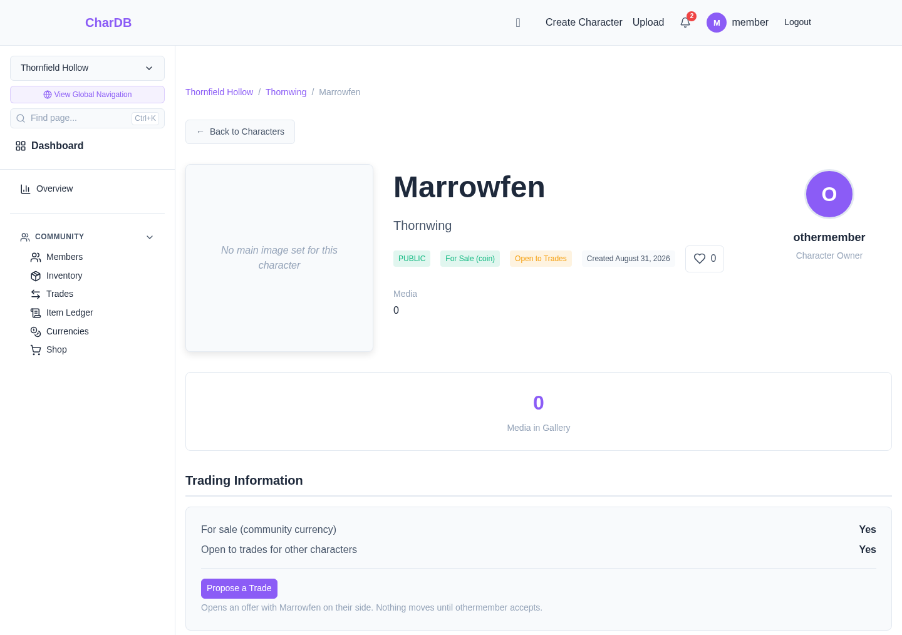
The button is the way in. It opens the composer already pointed at the owner, with the character on the side you are asking for — because arriving here from someone else's character page means you want it. Fill in your half and send.
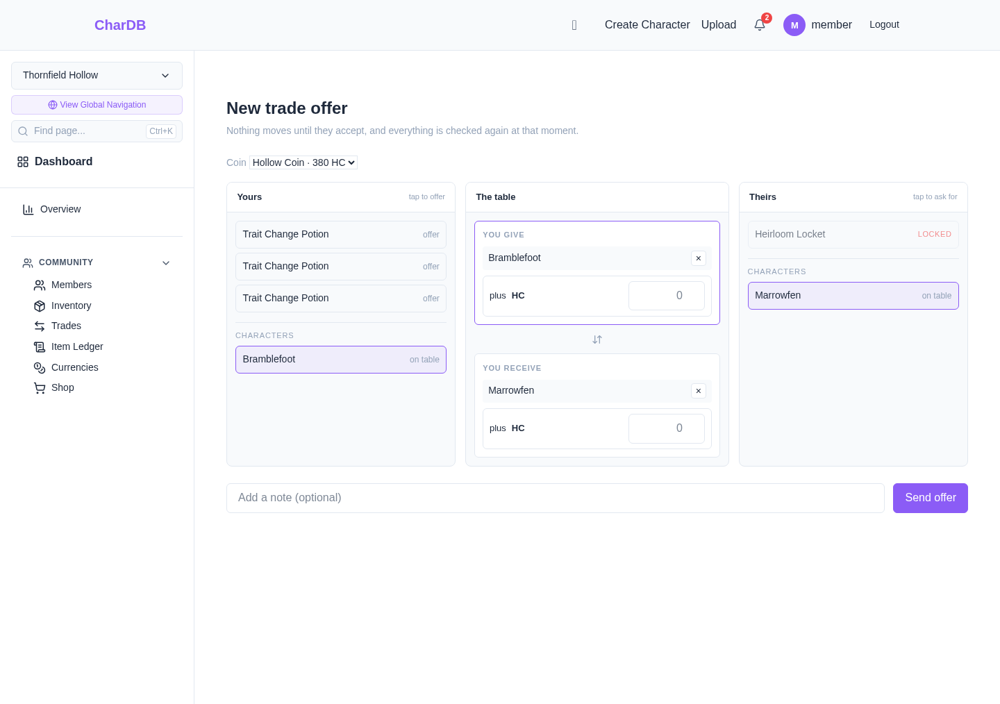
The panes only list characters that are already open. A closed one is absent rather than locked — which is the opposite of how an untradeable item is shown, and deliberately so. An item type is locked by community staff, so leaving it visible answers the question of where it went. A character is closed by its own owner, and its absence is the switch doing exactly what they set it to.
You cannot ask for any character of a type. Items let you do that because copies of a type are interchangeable, and no two characters are — there is one of each, and it is the one you meant. So a character line names the character, which also means the offer will fail at settlement if they part with them first. There is no looser way to ask for a particular character.
The same rule against double-promising applies, and matters more here: because there is only one of a character, every open offer naming it is a bid on the same thing.
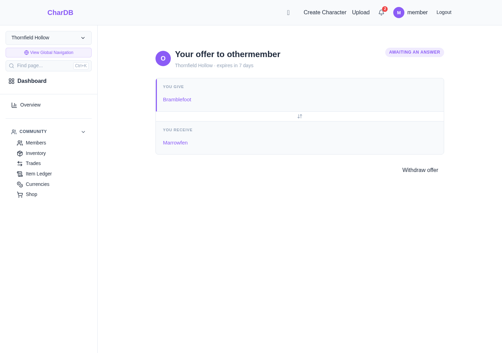
One thing the button does not do is check whether the other member has joined this community. A trade needs both parties to be members of it, and if they are not, the offer is refused when you send it rather than hidden beforehand.
The same six kinds are how you find a character to ask about. Advanced Search on the characters page carries a box for each, and ticking several means any of them — "show me anything free or up for offers" is one search.
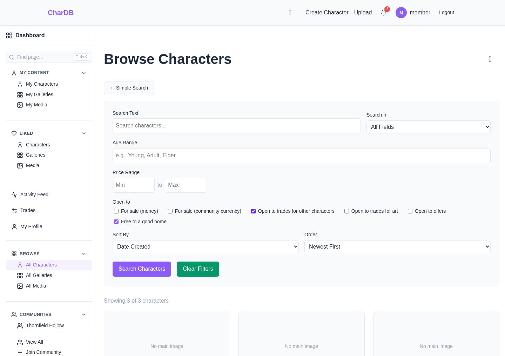
You cannot put the same item or character on the table in two open offers at once. Try it and the offer is refused with the thing named.
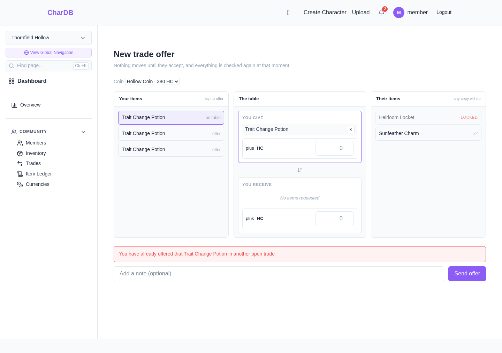
This applies to your specific items and characters. Asking two different people for one of their charms is fine, because you are asking for a type rather than a copy, and either of them can still fill it. Asking two people for their characters is fine for the same reason — those are two different characters. Several people bidding for one character is fine too: only the first accept can land, and that is the market working rather than a conflict to prevent.
Coin works the same way. What you can put on the table is your balance minus whatever your other open offers have already promised, so 300 of a 380 balance in one offer leaves 80 for the next — and the refusal says so, because "you do not have 200" is baffling to someone looking at 380.
Trades in the sidebar is one list holding both directions: offers waiting on you and offers you have out. Each row says which way it points in its own words, so there is no second place to check before you know whether anything needs you.
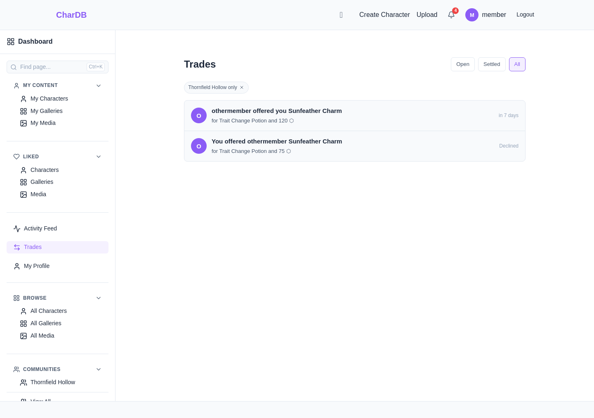
Reaching it from a community's sidebar narrows it to that community. Reaching it from the global sidebar does not, because an offer waiting on you is waiting on you wherever it was made.
An offer reads from your side: what you give at the top, what you receive below it, and the sender's note underneath.
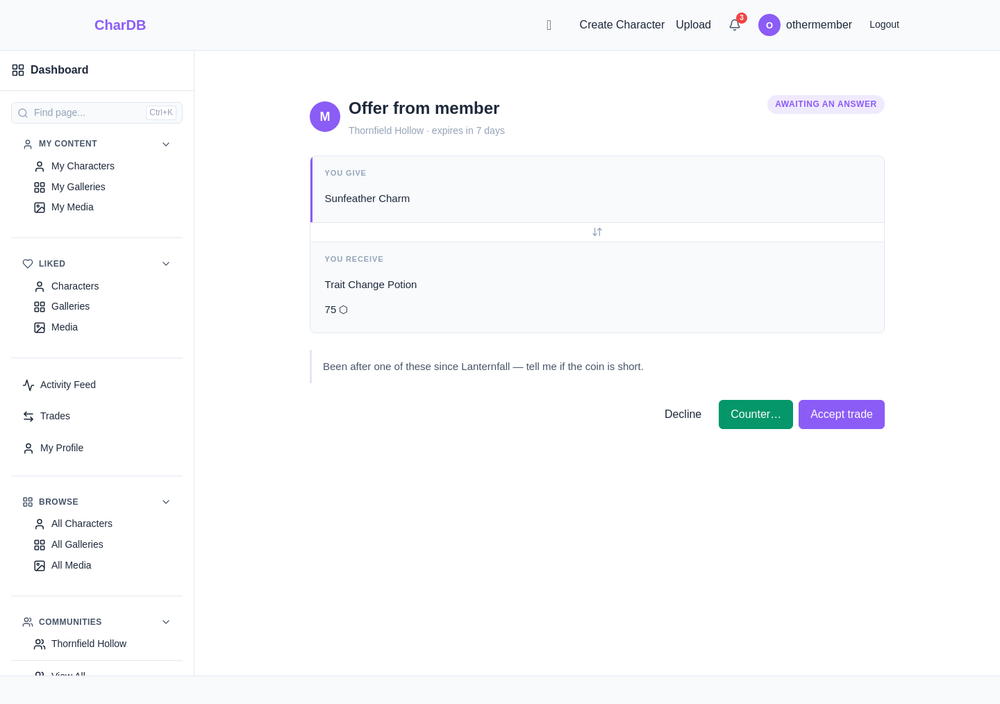
These are the states an offer can be in:
| State | Means |
|---|---|
| Awaiting an answer | Open. The recipient can accept, decline or counter; the sender can withdraw |
| Settled | Accepted, and everything on the table has moved |
| Declined | The recipient said no, or countered |
| Withdrawn | The sender took it back before it was answered |
| Expired | Nobody answered within seven days |
Accepting sends no choice about which of their copies you get. A by-type line means any of them will do, so the giver's side picks — newest first — rather than asking you a question you have no basis to answer.
Counter… opens the composer on the same table with you as the sender, ready to edit. Sending it declines the offer you were answering and delivers yours in a single step.
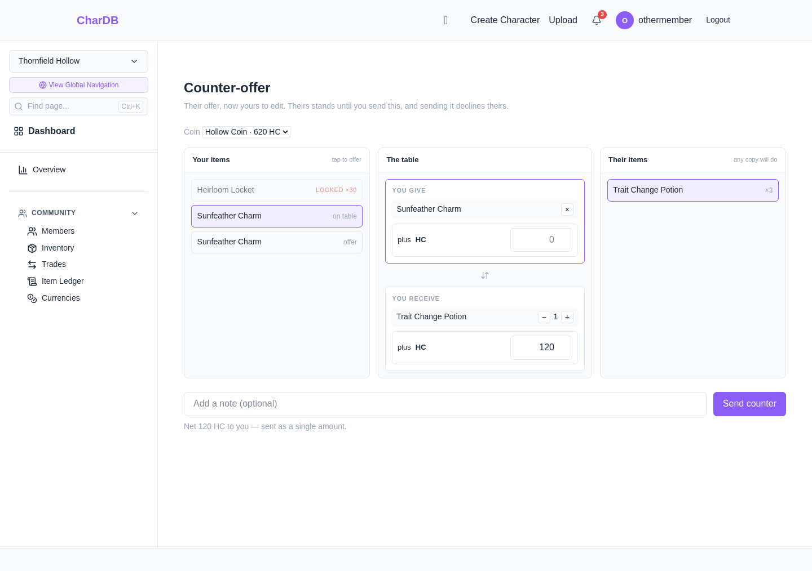
What was coming to you becomes what you ask for, what was being asked of you becomes rows picked from your own holdings, and the coin flips direction. Anything they have traded away since they wrote the offer is quietly dropped rather than carried over into a request that could not be filled.
Accepting moves everything at once: every item and character on both sides and the coin, in a single step that either completes or does nothing.
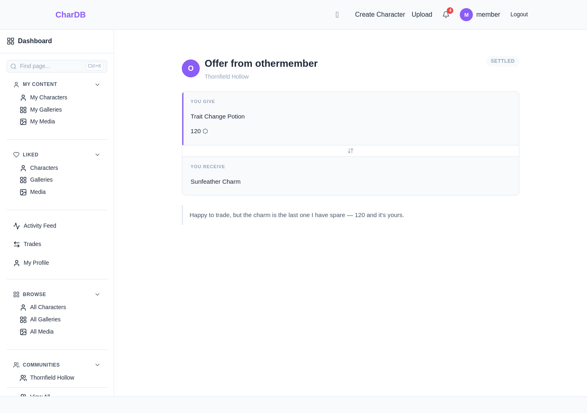
Because nothing was held while the offer stood, every condition is checked again at this moment rather than trusted from when the offer was written: that both of you still hold what you promised, that the payer can cover the coin, that the item types are still tradeable, that every character on the table is still open to trades, and that the offer has not expired. If any of that has changed, the trade fails and says which part — and nothing moves.
The character check is the one that matters most, because it is about consent rather than availability. An owner can close a character to trades at any point while an offer for it is standing, and that is exactly when they would. What settlement honours is the answer now, not the answer that was true when somebody wrote the offer.
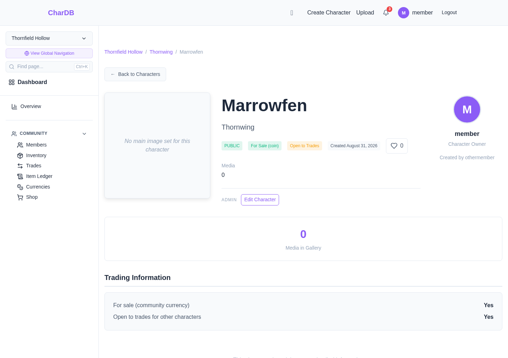
A trade moves ownership and nothing else. The character's creator credit, its gallery, its comments and its history all stay attached to the character. Its Open to Trades setting stays on too, so its new owner should turn it off if they do not want to be asked.
A settled trade writes to both community ledgers, which any member can read. This is what makes a traded item's history something you can check rather than something you have to take on trust.
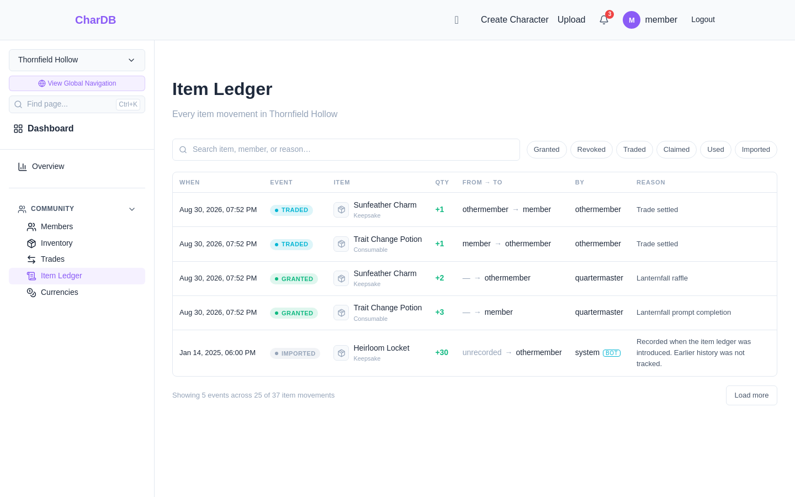
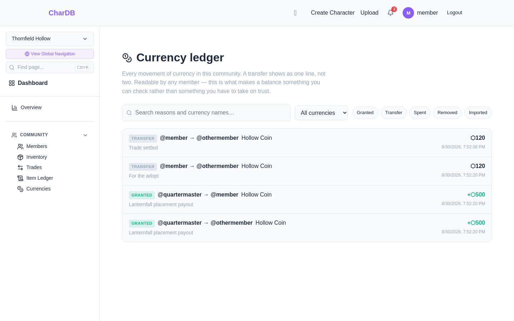
A character that changed hands is recorded too, on the character's own ownership history rather than in either community ledger — an ownership change belongs to the character, and follows it if it later leaves the community. That record is not yet shown anywhere in the interface; the character's owner panel is currently the visible answer to who holds it.
Every leg of one settlement shares an identifier, so the item movement, the coin movement and the character's change of hands can be recognised as parts of the same event rather than three things that happened to occur together.
Declining, withdrawing and expiring write nothing to either ledger. Nothing was held while the offer stood, so there is nothing to release — and a ledger recording every offer that was never taken up would bury the movements that actually happened.